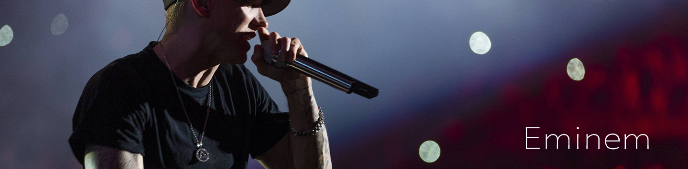

|  |
|
埃米纳姆（Eminem），原名马歇尔・布鲁斯・马瑟斯三世（Marshall Bruce Mathers III），1972年10月17日出生在美国密苏里州堪萨斯城，美国说唱歌手。 1997年，埃米纳姆他首以个人身份推出专辑《Infinite》 。2000年2月，埃米纳姆凭借专辑《The Slim Shady LP》获得第42届格莱美最佳Rap歌手和最佳Rap专辑 。 2001年2月21日，埃米纳姆凭借专辑《The Marshall Mathers LP》获得第43届格莱美最佳Rap歌手、最佳Rap组合和最佳Rap专辑 。2002年，埃米纳姆出演了电影《8英里》，并在影片中演唱了《Lose Yourself》，获得奥斯卡最佳原创歌曲奖 。2004年2月，埃米纳姆凭借歌曲《Lose Yourself》获得第46届格莱美最佳Rap歌手和最佳Rap歌曲 。 2008年10月，埃米纳姆的自传《这就是我》上市，而他的第六张专辑《Relapse》在年底发行。2011年12月，第53届格莱美奖的提名名单中，埃米纳姆以10项提名领跑，提名包括最佳专辑、最佳说唱专辑。2015年2月，埃米纳姆获得第57届格莱美最佳说唱专辑和最佳说唱表演奖 。 2011年8月，《滚石》将其评选为“嘻哈之王” 。
音乐播放中：Love The Way You Lie―Eminem
|